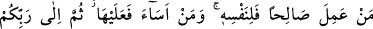
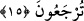

Bu durumda “kavmen” kelimesinin “nekre” oluşu, “tahkir ve küçümseme” içindir.
Mutlak mağfiret emrinin illet ve gerekçesi olmaz. Çünkü “mağfiret olsa da olmasa da bu
ceza gerçekleşecektir” dersen ben de derim ki “belki de burada mânâ şöyledir: “Ey
Muhammed (s.a.) müminlere de ki: Müşrik ve münâfıkların kötülük ve
edepsizliklerinden geçsinler, kendileri onları cezalandırmaya kalkışmasınlar. Çünkü
Allah kıyâmet günü onları kötülüklerine tam denk olacak şekilde cezalandıracaktır.
Ayrıca gelecek âyetler bu mânâya delâlet etmektedir. Yine “kesb/kazanma” kelimesi
Kur’ân’da çoğu kere kâfirlerin kesbi olarak zikredilir. Mânâ: “Bedir günü ve
benzerlerinde olduğu gibi ceza vakti geldiğinde Allah onları cezalandıracaktır” şeklinde
de olabilir. Âyette şu hususa da işâret edilmektedir: Mümin kimse onları küfür ve
eziyetlerinde ısrar ettikleri için mağfiret ehli olmasalar da böyle suçları affeder de
Allah’ın ahlâkıyla ahlâklanmış olur. Sonra Allah Teâlâ hayır yahut şer yaptığının
karşılığını hem dünyada, hem de âhirette yahut sadece âhirette verecektir.
15. Kim iyi iş yaparsa faydası kendinedir, kim de kötülük yaparsa zararı yine
kendinedir. Sonra Rabbinize döndürüleceksiniz.
“Kim” kendisiyle Allah rızası talep edilen “iyi bir iş yaparsa, yararı kendisinedir.”
Bu sâlih amelin yararı ve sevabı kendine âiddir. “Kim de kötülük yaparsa, zararı
kendisinedir.” Bu kötülüğün zararı ve cezası kendi aleyhinedir. Bu iş yapandan
başkasına sirâyet etmez. “Sonunda” ölümle “Rabbinize,” başkasına değil, işlerinizin
sahibi olan Allah’a “döndürüleceksiniz.” O, sizi hayır yahut şer olarak yaptıklarınıza
karşı cezalandıracaktır. Öyleyse ona kavuşmaya hazır olun.
Bu ifâde de iyi iş, sâlih amel kazanmaya teşvik, kötü iş ve mâsiyet irtikâb etmekten
sakındırma ve uyarı vardır. Mücrimi af ve mağfiret etmek, birinci kabildendir. Bunun
sahibi, Allah’ın sıfatıyla sıfatlanmış olur. Mâsiyet ve zulüm ikinci kabildendir. Bunun
sahibi, şeytanın sıfatıyla sıfatlanmıştır. Kim ebrârdan ise elbette o naîm cennetlerinde
olacaktır. Kim de füccârdan ise elbette o da cehennemde olacaktır. Fücûr, iki çeşittir:
Bir sûrî olan vardır ki bu bellidir. Bir de mânevî olan vardır ki, bu da Allah ehlini inkâr
edip onlara güya bir takım te’ville, yorumlarla ve benzeri şeylerle dil uzatmaktır. Bunun
dış görünüşü iyi, fakat iç yüzü bozuktur. Allah, teslim, rıza ve kabul ehline, haram,
şüpheli ve fuzûlî şeyleri terk edene, rahmetiyle muâmele eylesin.
Rivâyete göre bir adam sahrada yürüyüp giderken yalın ayak ve başı açık bir fakirle
karşılaştı. Adamın üzerinde iki hırka olup ihram gibi iki parçadan ibaretti. Bez kumaş